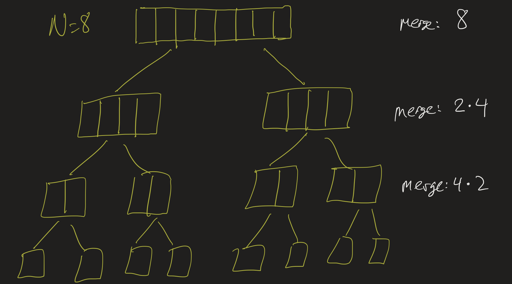

CS2 Lesson 23
Professor Abdul-Quader
Data Structures
Demos
More volunteers?
Running time
- Running time of the merge algorithm?
merge(array, tmp, start, mid, end)- Suppose \(N\) elements between start and end?
- How many steps of work does the “left” pointer do? How many does the “right” pointer do?
- How many total?
MergeSort Running Time
- Suppose \(T(n)\) is the number of steps the merge sort algorithm takes on a list of size \(n\). Then notice: \[T(n) = 2T(n/2) + O(n).\]
- Simplify: \(T(n) = 2T(n/2) + n\).
- Can we find a formula for \(T(n)\)? Or at least its “Big Oh”?
Example
\(n = 8\):

- How many steps spent merging at each “level”?
- How many “levels”?
- Running time?
Details
- \(T(8) = 2T(4) + 8\)
- \(= 2(2T(2) + 4) + 8\)
- \(= 4T(2) + 8 + 8\)
- \(= 4(2T(1) + 2) + 8 + 8\)
- \(= 8T(1) + 8 + 8 + 8\)
- \(= 8T(1) + 3 \times 8\).
Notice: \(T(1)\) (the base case) is \(O(1)\), and if \(n = 8\), then \(3 = \log_2{8}\).
Code
- In the code, let’s see if we can add a way to “count” the amount of merging that is done.
- Each call to
mergeshould take roughly(end - start)steps.
In general
- In general, if \(N = 2^k\):
- \(k\) “levels” of splitting
- Each “level” does \(N\) steps of merging in total.
- \(k \times N\) steps total!
- \(k = \log_2(N)\), so…
- \(O(N \log(N))\) steps total.
Data structures
- A data structure is a way of organizing data in memory. We have seen two important kinds of data structures already: arrays and ArrayList.
- A linked list is another kind of list structure.
Linked List

- Data organized into nodes.
- Each node has a data item and a link to the next node.
- Last node links to
null.
Linked List
Look at the Node class on replit.
Exercise: Create a “singly” linked list class. It should store a reference to the “head” node. First just implement the following operations:
- add to the beginning of the list (call this
addFirst) - find the size of the list
- get the first element of the list (the integer in the “head” node).
Test out your class in a main method.
Running time
- What is the running time of the
addFirstmethod? - What is the running time of the “size” method? Is there any way we can improve it?
The implementation details of the class really do matter here. If you design the class well, you can support this operation in constant time. How?
In addition, if we design the class well, we can support the operation of adding to the end to the list in constant time. How?
Exercise
Implement the following methods. They should run in \(O(1)\) time:
- addLast (adds an integer to the end of the list)
- getFirst (gets the first integer in the list)
- getLast (gets the last integer in the list)
get method
To truly have a list structure, we should be able to access any element of the list. For example, if I add \(5, 10, 3, 7\) to my list, I should be able to call \(list.get(1)\) and it should return \(10\).
- Running time (Big Oh) of the ArrayList’s
get? - Best running time for
getin our linked list class? Pseudocode?
In general, a structure in which we can access the \(i^{\text{th}}\) element in constant time is said to support random access.
Trees
A tree is a structure with a root node, so that all the nodes have links to child nodes, but there are no cycles. That is, you can’t have a situation where Node A has a child B, and B has a child A. A tree where every node has at most \(2\) children is called a binary tree.

(Binary tree with root 2)
Upcoming
- Project 3 overdue (grace time?)
- Exam 3 on Monday (practice exam on BrightSpace)
- Project 4 (problem set) due on BrightSpace May 6
- Guest lecture May 6 (HUM 2043)
- Final Exam May 9
- 9:00 - 11:30 AM! Note the time!